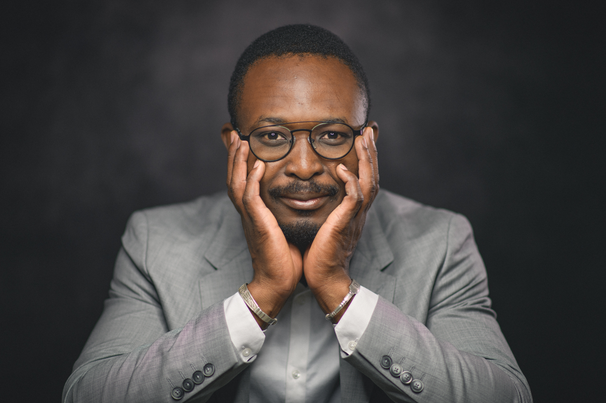

Development · Environmental · Natural Resource Economics
Manegdo Ulrich
Bienvenue DOAMBA
Postdoctoral Researcher · INRAE / BETA · Université de Lorraine
Ph.D. in Economics · Université Clermont Auvergne · Burkinabè
I study how natural resources shape welfare, structural change, and environmental outcomes in developing countries, using causal inference methods on observational data across Sub-Saharan Africa, Asia, and Latin America.
About
I am a Burkinabè development economist currently serving as a Postdoctoral Researcher at INRAE/BETA, Université de Lorraine (France). My PhD dissertation, Mining and Welfare in Developing Countries (Université Clermont Auvergne, November 2024), produced four empirical essays examining how natural resource extraction shapes global value chain participation, firm performance, deforestation, and wealth inequality.
I received my graduate training at CERDI (Centre d'Études et de Recherches sur le Développement International), one of France's most internationally recognised centres for development economics research and education. My doctoral jury included Dr. Kimm Gnangnon (World Bank Group) and Dr. Sampawende Jules Tapsoba (IMF).
Beyond research, I founded DMUB Consulting and C-Card, and serve as Editor-in-Chief of EcoDeViews: three initiatives bridging rigorous economic analysis with real-world impact on the African continent.
Education
Key Figures
Languages
Statistical Software
Econometric Methods
Data
Research
Natural Resources and Mining
How mining expansion shapes GVC participation, firm performance, and welfare in developing countries. Event-study identification on geolocated mine data across Sub-Saharan Africa, Asia, and Latin America.
Global Value Chains
Determinants of GVC positioning and upgrading in commodity-dependent economies. Trade integration dynamics under geopolitical shocks and sanctions regimes.
Environmental Economics
Ecosystem services valuation, deforestation drivers, protected area effectiveness. Non-market valuation using discrete choice experiments and willingness-to-pay estimation.
Agricultural Policy
Causal evaluation of EU Common Agricultural Policy reform on European farm environmental performance. Agricultural land use change determinants using FADN panel data.
Governance and Institutions
Press freedom and government spending efficiency. Political cycles in forest rents. Effects of external military interventions on governance quality.
Causal Inference
Entropy balancing, difference-in-differences, event-study, spatial and dynamic panel econometrics, multilevel models, GMM and Tobit applied to observational data in developing countries.
Key figures from published work. Place files (fig_gvc.png, fig_mining.png, fig_forest.png) in the same folder as index.html to display them.


Experience
- Evaluating the causal effect of CAP reform on European farm environmental performance (MOSAIC project, FADN panel, entropy balancing, diff-in-differences)
- Leading design and coordination of a stated preference survey on nocturnal lighting for environmental protection (TAMISEE project, field survey September 2026)
- Biodiversity and ecosystem services valuation via discrete choice experiments (WildE European consortium)
- Teaching: General Economics, Microeconomics, Survey Methodologies · Université de Lorraine (70 hrs/year)
- Drafted the national industrialization framework document for Madagascar, coordinating inputs across multiple government ministries
- Produced a policy-ready strategic document aligned with UNIDO's industrialization methodology
- Authored four research essays on mining, deforestation, GVC participation, and wealth inequality (3 published, 6 working papers under review)
- Teaching: Microeconomics, Macroeconomics, Statistics, Econometrics, Project Management (64 hrs/year)
- Elected member, UCA doctoral school council (2021–2023)
- Organizing committee, UCA Social Sciences Doctoral Workshop and ARTEMIS Doctoral Workshop (budget management, public procurement)
- Contributed to the preparation of the Paris Summit on Financing African Economies (May 2021), a landmark multilateral initiative on post-COVID debt relief and development finance for Africa
- Produced economic briefs for the chief economist of the CAPS, synthesising macroeconomic analysis for diplomatic and policy audiences
- Welcome and orientation for international students at the School of Economics
Publications
World
Ventures
Alongside academic research, I founded and co-lead three initiatives that bridge rigorous economic analysis with real-world impact on the African continent: a digital media platform dedicated to development economics, an economic consulting firm, and a startup redefining gifting culture in Burkina Faso.
EcoDeViews (Economic Development Views) is a French-English digital media platform and collaborative reflection space dedicated to the analysis of African economic development dynamics. Founded by Régis Waalè DABIRE, Ulrich DOAMBA joined as Editor-in-Chief, leading editorial direction and content production.
"Média numérique et plateforme de réflexion collaborative sur les logiques de développement des économies africaines."
- Scientific and university-based approach to economic analysis, making research accessible to a wider audience
- Vision: empower economic actors and citizens through rigorous, evidence-based information and analysis
- Covers monetary policy, natural resources, banking, inflation, fiscal policy, and economic governance across Africa
- Team of economists, writers and technical staff; bilingual (French / English); active on social media
- Articles authored by Ulrich DOAMBA include analyses of natural resource economics, monetary systems, and inflation dynamics
C-Card is the first experience gift card platform in Burkina Faso, offering a curated catalogue of memorable experiences (restaurant dinners, spa treatments, escapes, outings) as giftable cards.
"Offrez des moments inoubliables. Une carte cadeau liée à une vraie expérience au Burkina Faso."
- Addresses a gap in the Burkinabè formal gifting market: the first product linking gift purchasing to a guaranteed real-world experience
- Available in Ouagadougou and Bobo-Dioulasso, Burkina Faso's two largest cities
- Payments via Mobile Money (Orange Money, Moov Money) and bank card, accessible to all segments of the population
- Partners with local restaurants, wellness centres, and leisure providers to deliver the experience
- Reflects an entrepreneurial vision to develop a formalised consumer experience economy in West Africa
DMUB Consulting is an economic research and consulting firm applying scientific rigour to the strategic decisions of businesses and institutions operating in Africa.
"Clarté scientifique pour des décisions stratégiques." (Scientific clarity for strategic decisions.)
- Bridges the gap between academic economic research and practical strategic decision-making in African contexts
- Offers quantitative analysis, policy assessment, project evaluation, and strategic advisory services
- Draws on the founder's expertise in econometrics, development economics, environmental economics, and natural resource analysis
- Serves businesses, NGOs, development institutions, and public-sector bodies seeking evidence-based guidance
- Positioned at the intersection of academic rigour and operational relevance for Africa's development challenges
Other Activities
Editorial and Scientific Communication
Academic Memberships
Event Organization and Academic Governance
Get in Touch
Manegdo Ulrich Bienvenue DOAMBA
Open to academic collaborations, research visits, visiting fellowships, and policy consulting opportunities.
Send an Email ✉️© 2026 Manegdo Ulrich Bienvenue DOAMBA. All rights reserved. The content, design, and code of this site may not be copied, reproduced, or reused without prior written permission — see LICENSE.